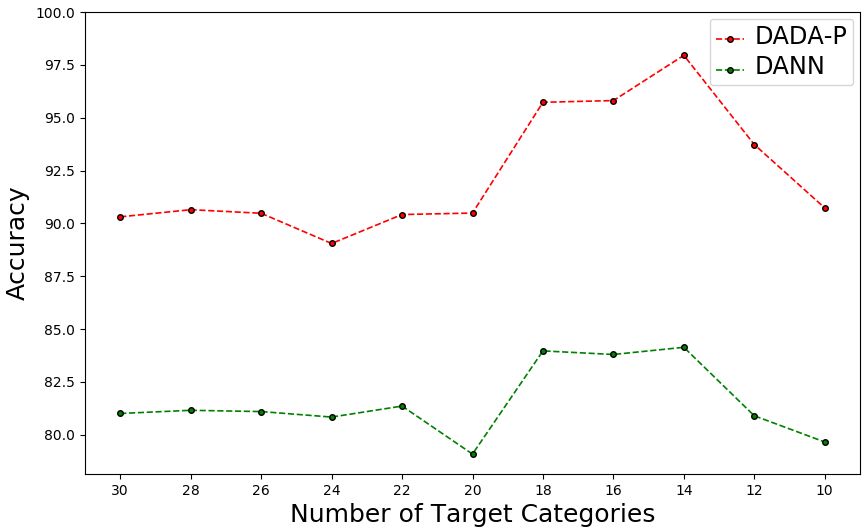

Discriminative Adversarial Domain Adaptation
|
South China University of Technology1
|
Teaser
|
|
|
We propose a novel adversarial learning method termed Discriminative Adversarial Domain Adaptation (DADA).
Based on an integrated category and domain classifier, DADA has a novel adversarial objective that encourages a mutually inhibitory relation between category and domain predictions for any input instance.
Except for the traditional closed set domain adaptation, we also extend DADA for extremely challenging problem settings of partial and open set domain adaptation.
|
Abstract
|
Given labeled instances on a source domain and unlabeled ones on a target domain,
unsupervised domain adaptation aims to learn a task classifier that can well classify target instances.
Recent advances rely on domain-adversarial training of deep networks to learn domain-invariant features.
However, due to an issue of mode collapse induced by the separate design of task and domain classifiers,
these methods are limited in aligning the joint distributions of feature and category across domains.
To overcome it, we propose a novel adversarial learning method termed Discriminative Adversarial Domain Adaptation (DADA).
Based on an integrated category and domain classifier, DADA has a novel adversarial objective that
encourages a mutually inhibitory relation between category and domain predictions for any input instance.
We show that under practical conditions, it defines a minimax game that can promote the joint distribution alignment.
Except for the traditional closed set domain adaptation, we also extend DADA for extremely challenging problem settings of partial and open set domain adaptation.
Experiments show the efficacy of our proposed methods and we achieve the new state of the art for all the three settings on benchmark datasets.
|
Background & Motivation
|
|
|
Recent advances rely on domain-adversarial training of deep networks to learn domain-invariant features.
However, due to an issue of mode collapse induced by the separate design of task and domain classifiers,
these methods are limited in aligning the joint distributions of feature and category across domains.
To overcome it, we propose a novel adversarial learning method termed Discriminative Adversarial Domain Adaptation (DADA).
|
Highlights
Discriminative Adversarial Learning
|
To establish a direct interaction between category and domain predictions for any source instance, we propose a novel source discriminative adversarial loss that
is inspired by the principle of binary cross-entropy loss and tailored to the design of the integrated classifier.
Changes of category and domain predictions when minimizing and maximizing the proposed source discriminative adversarial loss in the two cases.
To achieve the joint distribution alignment, the explicit interplay between category and domain predictions for any target instance should also be created.
We propose a target discriminative adversarial loss based on the design of the integrated classifier.
It uses conditional category probabilities to weight the domain predictions.
|
Extension for Partial Domain Adaptation
|
Partial domain adaptation is a more realistic setting, where the target label space is subsumed by the source one.
We extend DADA for partial domain adaptation by using a reliable category-level weighting mechanism.
|
Extension for Open Set Domain Adaptation
|
Open set domain adaptation is a very challenging setting, where the source label space is subsumed by the target one.
We extend DADA for open set domain adaptation by training the classifier to classify all target instances as the unknown category with a small probability q,
which can achieve a balance between domain adaptation and outlier rejection.
|
Generalization Error Analysis
|
Our proposed DADA can formally better bound the expected target error than existing domain adaptation methods,
which aim to measure and minimize the F-distance or the D-distance.
The FH-distance can be upper bounded by the optimal solution of DADA.
|
Experiments
Closed Set Domain Adaptation
|
R1: Ablation Study
In the following table, we can observe that DANN improves over No Adaptation, its result is much worse than DANN-CA,
verifying the efficacy of the design of the integrated classifier.
DADA (w/o em + w/o td) improves over DANN-CA and
DADA (w/o em) improves over DADA (w/o em + w/o td),
showing the efficacy of our proposed discriminative adversarial learning.
|
R2: Quantitative Comparison
The following figure shows that our proposed DADA gives the predicted probability on the true category of any target instance a better chance to approach 1,
meaning that target instances are more likely to be correctly classified by DADA, i.e., a better category-level domain alignment.
Average probability on the true category over all target instances by task classifiers of different methods.
|
R3: Feature Visualization
The following figure shows qualitative improvements of these methods at aligning features across data domains,
i.e., the distribution of target samples (red) changes from the scattered state of DANN to multiple category-wise clusters of DADA,
which are aligned with source samples (blue) of corresponding categories.
|
|
(a) No Adaptation
|
(b) DANN
|
(c) DANN-CA
|
(d) DADA
|
|
The t-SNE visualization of feature alignment between the source (blue) and target (red) domains.
|
R4: An In-Depth Analysis of Our Training Scheme
"Rate of Source Instances Failing to Satisfy Condition" declines to a very low value in an oscillatory manner,
showing the efficacy of this training scheme in keeping the condition satisfied.
All valleys of "Test Error of Target Data" are derived from the adversarial training of DADA,
showing the excellent efficacy of our proposed DADA in aligning the source and target domains.
At epochs of adversarial training, the lower "Rate of Source Instances Failing to Satisfy Condition" is,
the more improvement of performance is obtained, showing the necessity of satisfying the condition.
The good performances of DADA on the two adaptation settings of MNIST→USPS and USPS→MNIST, which are very close to the perfect performance of 100%,
confirm the efficacy of our proposed DADA in aligning the joint distributions of feature and category across the two domains.
(a) MNIST→USPS (Nalter = 32)
(b) USPS→MNIST (Nalter = 32)
|
R5: Comparison with SOTA
Our proposed DADA outperforms existing methods, testifying the efficacy of DADA in aligning the joint distributions of feature and category across domains.
Our proposed DADA consistently achieves a good result on different adaptation settings, showing its excellent robustness.
Results for closed set domain adaptation on Office-31 based on ResNet-50.
Results for closed set domain adaptation on Syn2Real-C based on ResNet-101.
Results for closed set domain adaptation on Digits based on LeNet.
|
Partial Domain Adaptation
|
R1: Effects of the Number of Target Categories
The following figure shows that our proposed DADA-P performs much better than DANN in all settings.
It is noteworthy that the relative performance improvement becomes larger
when the number of target categories decreases,
testifying the superiority of our methods in reducing the influence of negative transfer.
Thus, given a source domain, our methods can perform much better
when applied to the target domain with unknown number of categories.

|
R2: Effects of the Number of Outlier Source Categories
The following figure shows that our proposed DADA-P significantly outperforms DANN in all settings.
Particularly, the relative performance improvement is larger when the number of source categories is larger,
demonstrating that our methods are more robust to the number of outlier source categories.
Thus, for a given target task, our methods can have a much better performance when utilizing different source tasks.
|
R3: Comparison with SOTA
Our proposed DADA-P substantially outperforms all comparative methods,
showing the effectiveness of DADA-P on reducing the negative influence of source outliers
while promoting the joint distribution alignment in the shared label space.
Results for partial domain adaptation on Syn2Real-C based on ResNet-50.
Results for partial domain adaptation on Office-31 based on ResNet-50.
Results for partial domain adaptation on Office-31 based on AlexNet.
Results for partial domain adaptation on Office-Home based on ResNet-50.
Results for partial domain adaptation on ImageNet-Caltech based on ResNet-50.
|
Open Set Domain Adaptation
|
R1: Effects of the Small Probability
As the small probability q increases, accuracies of OS and OS* decrease and the accuracy of Unknown increases,
which means that the target instances are more likely classified as the unknown category.
When q = 0, the objective of the feature extractor is to align the whole source domain and the whole target domain,
resulting in the misclassification of all unknown target instances as the known categories.
To make a trade-off, we empirically set q = 0.1 for all open set adaptation settings.
|
R2: Comparison with SOTA
Our proposed DADA-O outperforms all comparative methods in both evaluation metrics of Known and Mean,
showing the efficacy of DADA-O in both aligning joint distributions of the known instances and identifying the unknown target instances.
Results for open set domain adaptation on Syn2Real-O based on ResNet-152.
Results for open set domain adaptation on Office-31 based on AlexNet.
|
BibTeX
@inproceedings{tang2020discriminative,
title={Discriminative adversarial domain adaptation},
author={Tang, Hui and Jia, Kui},
booktitle={Proceedings of the AAAI Conference on Artificial Intelligence},
volume={34},
number={04},
pages={5940--5947},
year={2020}
}
Acknowledgements
Based on a template by Keyan Chen.